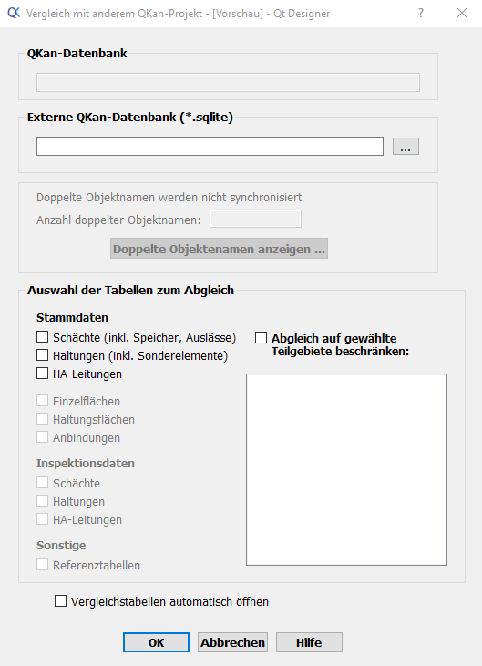
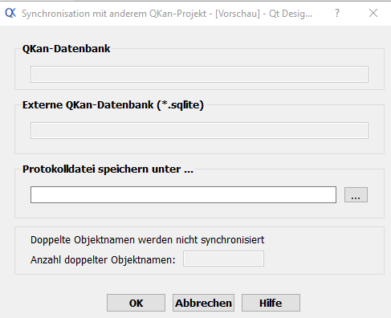

Synchronisation
Vergleich mit einem anderen QKan-Projekt
Mit dem Tool Vergleich mit anderem QKan-Projekt kann das aktuell geöffnete QKan-Projekt mit einem anderen Projekt verglichen werden. Dies ist besonders hilfreich, um Datenabweichungen, doppelte Elemente oder fehlende Einträge zwischen zwei Projekten zu identifizieren.
{kind=link}
Unter dem Punkt „QKan-Datenbank“ wird automatisch die derzeit geöffnete Datenbank angezeigt. Diese dient als Referenzprojekt für den Vergleich. Unter „Externe QKan-Datenbank“ kann die zweite Datenbank ausgewählt werden, mit der das aktuelle Projekt verglichen werden soll. Im darunterliegenden Feld wird die Anzahl der doppelten Objektnamen angezeigt, die sowohl im aktuellen Projekt als auch in der externen Datenbank vorhanden sind. Als letztes werden die für den Abgleich zu nutzenden TAbellen auswgewählt.
Nach der Auswahl der externen Datenbank und der Tabellen startet QKan den automatischen Abgleich der Elemente. Doppelte oder fehlende Elemente werden markiert, sodass der Nutzer direkt erkennen kann, wo Unterschiede bestehen. Optional können die Ergebnisse exportiert oder als Bericht gespeichert werden, um die Datenkorrektur zu erleichtern.
Synchronisation mit anderem QKan-Projekt
Nach dem Vergleich von zwei QKan-Projekten kann das Tool Synchronisation mit anderem QKan-Projekt verwendet werden, um die Daten des aktuellen Projekts mit den Informationen aus einem anderen Projekt aktualisieren zu lassen.
{kind=link}
Die Pfade der beiden zu synchronisierenden Datenbanken werden automatisch aus dem zuvor durchgeführten Vergleich mit anderem QKan-Projekt übernommen. Während des Synchronisationsprozesses wird ein Protokoll erstellt, das alle vorgenommenen Änderungen dokumentiert. Für dieses Protokoll kann der Nutzer einen Speicherort festlegen, um die Änderungen nachvollziehen und ggf. rückgängig machen zu können. Am Ende des Formulars wird die Anzahl der doppelten Objektnamen angezeigt, die sowohl im aktuellen als auch im externen Projekt vorhanden sind. Dies ermöglicht eine schnelle Kontrolle, welche Elemente ggf. manuell überprüft werden müssen.